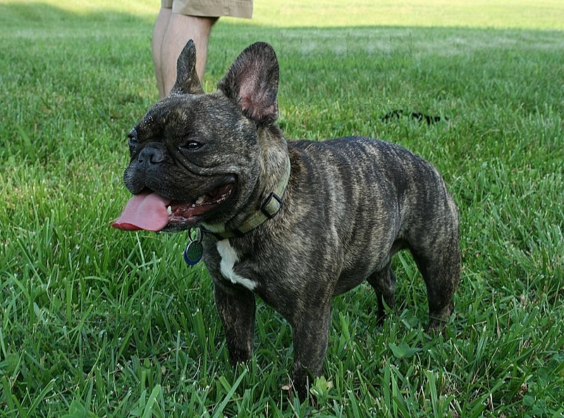
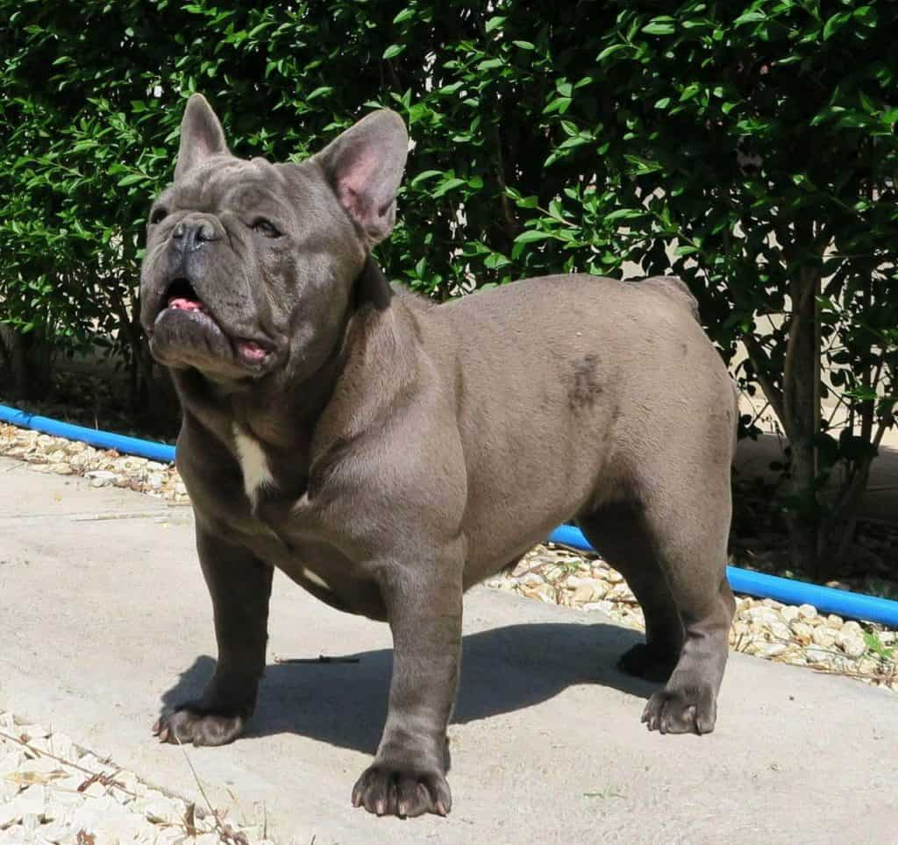

The French Bulldog, French: Bouledogue Français, is a French breed of companion dog or toy dog. It appeared in Paris in the mid-nineteenth century, apparently the result of cross-breeding of Toy Bulldogs imported from England and local Parisian ratters.
It is commonly kept as a pet, and is among the most frequently registered dogs in a number of countries including Australia, the United Kingdom and the United States.
From the beginning of the nineteenth century bulldogs were bred in the United Kingdom for purposes other than traditional blood sports such as bull-baiting, which were banned in 1835. By the middle of the century there were miniature bulldogs, often weighing some 7–11 kg (15–24 lb), though some weighed considerably less.
At the same time, lace workers from Nottingham who were displaced by the Industrial Revolution began to settle in Normandy, France.They brought a variety of dogs with them, including Toy Bulldogs. The dogs became popular in France and a trade in imported small Bulldogs was created, with breeders in England sending over Bulldogs that they considered to be too small, or with faults such as ears that stood up. By 1860, there were few Toy Bulldogs left in England, such was their popularity in France, and due to the exploits of specialist dog exporters.
The small Bulldog type gradually became thought of as a breed, and received a name, the Bouledogue Francais. This Francization of the English name is also a contraction of the words boule (ball) and dogue (mastiff). The dogs were highly fashionable and were sought after by society ladies and Parisian prostitutes alike, as well as creatives such as artists, writers, and fashion designers. The artists Edgar Degas and Henri de Toulouse-Lautrec are thought to have French Bulldogs in their paintings. However, records were not kept of the breed's development as it diverged further away from its original Bulldog roots. As it changed, terrier stock had been brought in to develop traits such as the breed's long straight ears.

width="300" height="170"The American Kennel Club standard for the French Bulldog states that it should be muscular, with a soft and loose coat forming wrinkles.
The AKC Standard weight for a French Bulldog is maximum 28 pounds. The head of a French bulldog should be square shaped and large, with ears that resemble bat ears. French bulldogs are a flat-faced breed. Eyes that are AKC Standard approved for French Bulldogs are dark and almost to the point of being black. Blue eyed French bulldogs are not AKC approved. The coat of a French bulldog should be short haired and fine and silky. Acceptable colors under the breed standard are the various shades of brindle, fawn, cream or white with brindle patches (known as "pied"). The fawn colors can be any light through red. The most common colors are brindle, then fawn, with pieds being less common than the other colors. The breed clubs do not recognize any other colors or patterns. This is because some colors come linked with genetic health problems not usually found in the breed. These include blue coloration, which is linked with a form of alopecia (hair loss or baldness), sometimes known as "blue dog alopecia". Even dogs that are not blue can develop "blue dog alopecia" or canine follicular dysplasia.
The French Bulldog, like many other companion dog breeds, requires close contact with humans. If left alone for more than a few hours, it may experience separation anxiety. French Bulldogs are often kept as companions.[7] The breed is patient and affectionate with their owners, and can live with other breeds. French Bulldogs are agreeable dogs, and are human-oriented, and this makes them easier to train, though they do have tendencies to be stubborn. They are ranked 58th in Stanley Coren's The Intelligence of Dogs.[22] There are certain exceptions to this average level of canine intelligence; a French Bulldog named Princess Jacqueline which died in 1934 was claimed to be able to speak 20 words, in appropriate situations.[23]
As a consequence of selective breeding, French Bulldogs are disproportionately affected by health related problems.
The skull malformation brachycephaly was increased by breeding selection which led to the occurrence of the brachycephalic airway obstructive syndrome. Therefore many French Bulldogs often pant sticking out their tongue even at slight efforts like walking.[25] The brachycephalic syndrome causes them to have multiple side effects, as in difficulty breathing (which includes snoring, loud breathing).[26] It happens because they have narrow nostril openings, a long soft palate, and fairly narrow tracheas.[26] This issue can lead to death in French Bulldogs if they are not undergoing proper treatment.[26]
In order to treat these dogs and create a smoother airway to the lungs, a procedure must be done that takes out a portion of their soft palate.[26] The results of the procedure show a minimum of 60% better airway passage to the lungs.
A study of the deaths of 30563 dogs in the United Kingdom in 2016–2020 found the French Bulldog to have a life expectancy at birth of 4.93 years, the lowest by large margin all breeds in the study, which found an average for all dogs of 11.23 years.[27]: 1 Analysis of data from Japan suggested that its life expectancy there is considerably higher, at 10.2 years.
In 2013, a UK Medical Study reviewed the health of 2228 French Bulldogs under veterinary care in the UK.[28] The study found that 1612 (72.4%) of these French Bulldog had at least one recorded health issue:[28] "The most common disorders recorded were ear infections (14.0%), diarrhea (7.5%) and conjunctivitis (3.2%). Skin problems were the most commonly reported group of disorders (17.9%). This study of over two thousand French Bulldogs provides a framework to identify the most important health priorities in French Bulldogs in the UK and can assist with reforms to improve health and welfare within the breed."
As they are a brachycephalic breed, French Bulldogs are banned by several commercial airlines due to the numbers that have died while in the air.[29] This is because dogs with snub noses find it difficult to breathe when they are hot and stressed. The temperature in a cargo space in an aircraft can rise as high as 30 °C (86 °F) when waiting on the runway.